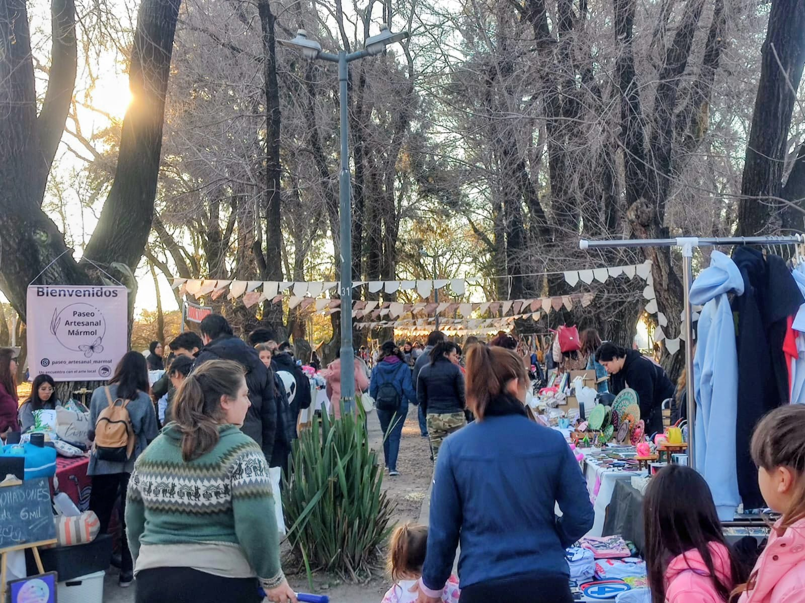
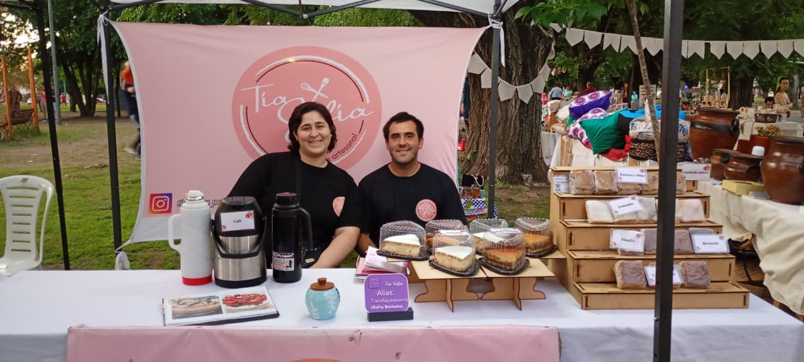
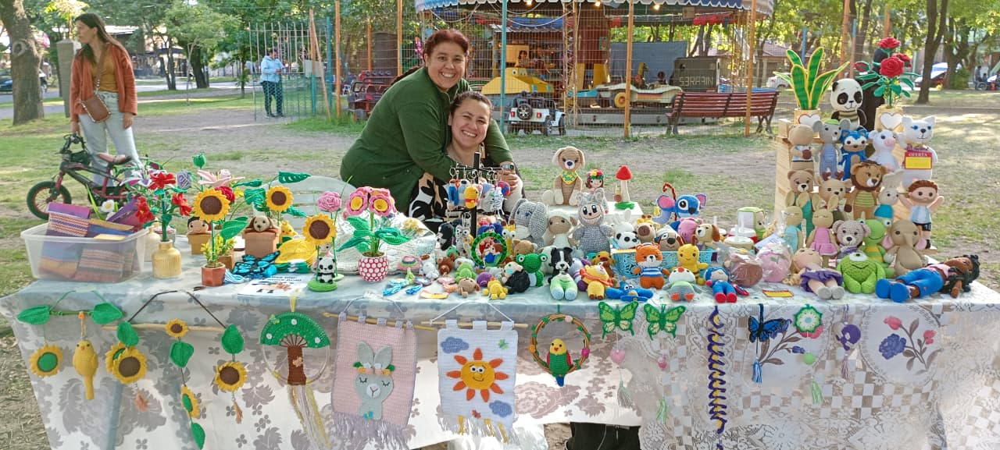
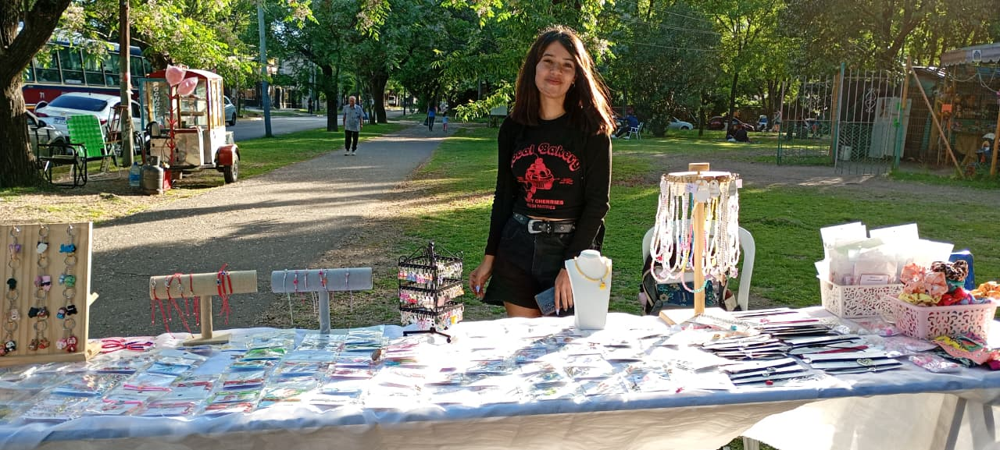
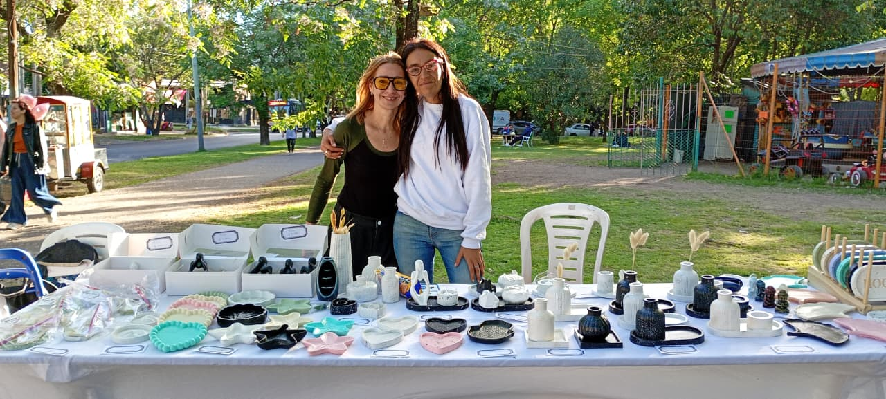
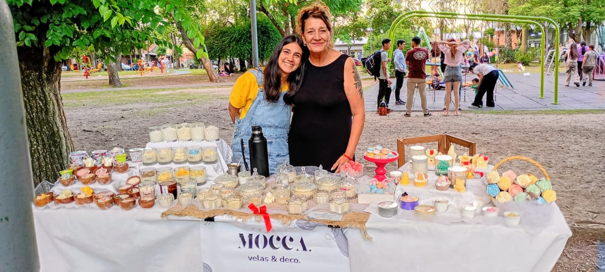
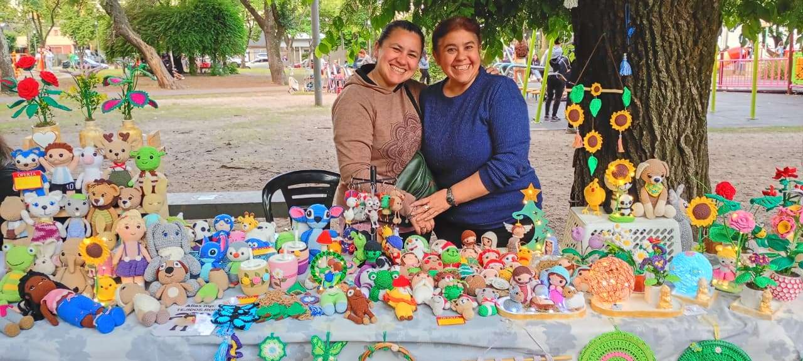
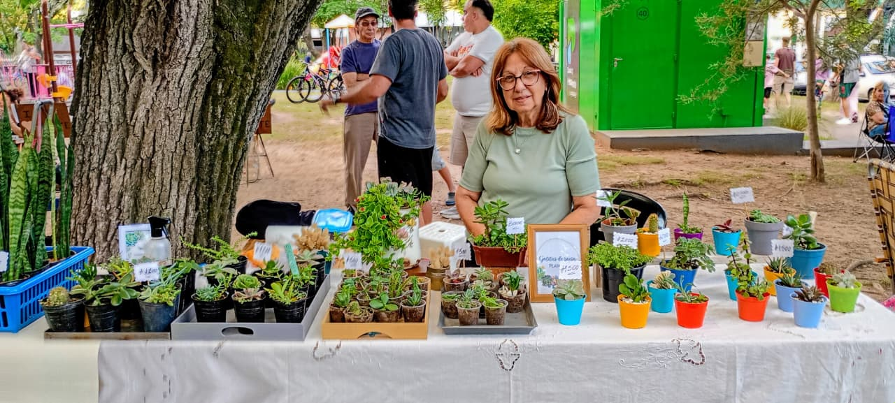

Paseo
Artesanal
Mármol
📌 Próxima Feria
- Plaza Mármol (Bynnón 2932)
- Fechas variables según organización y clima
- Horario habitual: 15:30 a 19:30 hs
(puede variar según estación) - ✨ Confirmamos cada edición por Instagram.
Sobre el Paseo
El Paseo Artesanal Mármol es un espacio de encuentro donde artesanos locales comparten su trabajo, creatividad y comunidad. Nos reunimos dos o tres domingos al mes en un ambiente familiar y al aire libre, celebrando la producción artesanal y el trabajo hecho a mano.
Nuestro objetivo es promover la cultura artesanal local, generar un espacio de encuentro para la comunidad y ofrecer productos únicos elaborados por sus propios creadores. Somos una Feria de Artesanos del Partido de Alte. Brown que funciona con el apoyo del Municipio.

Lo que nos define
Qué vas a encontrar
Descubrí los rubros clásicos y las nuevas incorporaciones del Paseo.

Gastronomía
Pastelería, comida casera, productos gourmet, conservas, mermeladas y blended (mezclas de yuyos).

Textiles y Tejidos
Tejidos a mano, amigurumis, cartucheras, almohadones, ropa interior y macramé.

Decoración y Arte
Pinturas, cuadros, puntillismo, mosaiquismo, pirograbados, decoupage y vitrofusión.

Bijouterie y Accesorios
Collares, pulseras, carteras, marroquinería, sublimados, papelería creativa y cuadernos artesanales.

Artesanías y Cerámica
Cerámica artesanal, porcelana fría, macetas, objetos de madera y artículos de hierro.

Bienestar y Aromas
Velas, jabones artesanales, sahumerios, difusores y perfumería de aromas naturales.

Juguetes y Muñecos
Juguetes de madera, muñecos artesanales y muñequería.

Jardín y Mascotas
Plantas suculentas, cactáceas y accesorios artesanales para mascotas.
¿Querés Participar?
El proceso es simple
Completá el formulario
Envianos tus datos y tu rubro artesanal.
Revisamos tu postulación
Evaluamos que cumpla los requisitos de la feria.
Te contactamos
Te avisamos y coordinamos tu ingreso al Paseo.
Formulario de Postulación
Envíanos tus datos y rubro artesanal para evaluar tu participación en la feria.